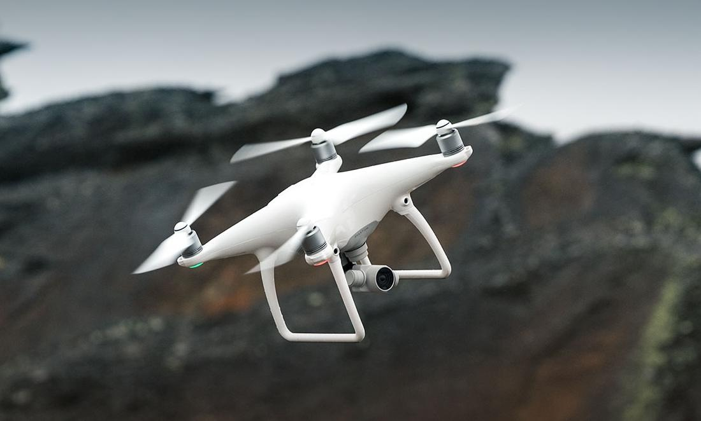
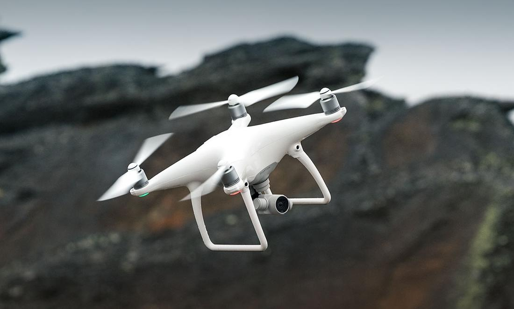

About the Workshop
The 2026 Workshop on Advances in Drone Vision (ADV 2026) aims to bring together experts from academia and industry to explore the latest research in drone-based computer vision technologies. Drones are now vital across numerous sectors, including agriculture, logistics, infrastructure monitoring, disaster response, and environmental surveillance.
As drone autonomy evolves, computer vision is becoming the essential intelligence behind their capabilities. From object detection and scene understanding to real-time edge computing, this workshop focuses on making aerial robotics smarter, faster, and more reliable. ADV 2026 will showcase vision algorithms for onboard processing, anomaly detection, aerial image segmentation, and much more.
Our goal is to foster interdisciplinary collaboration, discuss novel methodologies, and highlight the critical role of vision in next-gen aerial systems.
 

Topics of Interest
We welcome submissions on a broad range of topics related to computer vision for drones, including but not limited to:
- Object detection, tracking, and recognition from aerial imagery
- Semantic and instance segmentation for aerial vision
- Scene understanding and 3D reconstruction from drone-captured data
- Multimodal fusion for aerial perception
- Event-based vision for high-speed drone applications
- Real-time localization, mapping, and environment representation
- Vision-based trajectory planning and obstacle avoidance
- Energy-efficient perception for extended drone operations
- Swarm intelligence and collaborative drone vision
- AI-driven applications for disaster response and environmental monitoring
- Drone vision for smart cities and infrastructure assessment
- Assistive drones for healthcare and search-and-rescue missions
- Edge AI and real-time onboard processing for drones
- Lightweight deep learning models for resource-constrained UAVs
- Secure and privacy-preserving drone vision systems
- Drone vision in precision agriculture and environmental sustainability
- Surveillance and security applications leveraging aerial vision
- Autonomous inspection of industrial and energy infrastructure
- AI-powered delivery and logistics with drone-based perception
Program
The workshop will be held on June 17, 2026. The full program will be announced in due course. The event will also feature the presentation of results from a new project on drone-based road emergency assistance, developed by CILAB in collaboration with MIT, with the support of the Local Health Authority (ASL) and the Local Police.
Call for Papers
All submissions must be made electronically via EasyChair.
Authors are invited to submit original contributions in the following formats:
- Regular Papers: up to 12 pages, including references, presenting completed work with substantial technical content.
- Short Papers: Up to 8 pages, including references, reporting preliminary results or ongoing research.
All submissions must be formatted according to the CEURART single-column template as specified on the CEUR Workshop Proceedings website.
Submissions will undergo a single-blind peer review process and will be evaluated based on relevance, originality, significance, soundness, clarity, and technical quality.
Upon acceptance, at least one author must register for the event, attend the workshop, and present the paper orally. All accepted papers will be submitted for publication in the CEUR Workshop Proceedings.
Deadlines: TBA
Submit Your Paper (TBA)